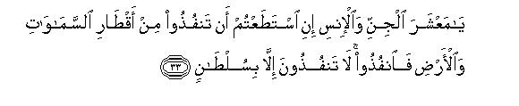
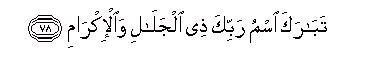

بسم الله الرحمن الرحيم
Sayyid Abul Ala Maududi - Tafhim al-Qur'an - The Meaning of the Qur'an
 55.
Surah Ar Rahman (The Most Merciful)
55.
Surah Ar Rahman (The Most Merciful)
This Surah is entitled Ar Rahman, the word with which it begins. This title, however, deeply relates to the subject matter of the Surah too, for in it, from the beginning to the end, the manifestations and fruits of Allah's attribute of mercy and grace have been mentioned.
The commentators generally hold the view that this is a Makki Surah, though according to some traditions which have been cited on the authority of Hadrat Abdullah bin Abbas, Ikrimah and Qatadah, it was revealed at Madinah. But, firstly, there are also some other traditions from these very authorities, which contradict this view; secondly, its subject matter bears a closer resemblance with the Makki Surahs than with the Madani Surahs; rather it appears to belong to the very early Makkah period. However, there are several authentic traditions which testify that it had been revealed in Makkah itself many years before the hijrah.
Musnad Ahmad contains a tradition from Hadarat Asma, daughter of Abu Bakr (may Allah bless them both), to the effect: "I saw the Messenger of Allah offering his Prayers in the sacred precincts of the Ka'bah facing the corner in which the "Black Stone" is fixed. This relates to the time when the Divine Command, fasda bi-ma tumar ("So, proclaim publicly, O Prophet, what you are being commanded") had not yet been revealed. The polytheists at that time were hearing the words, Fa-biayyi alaa'i Rabbi kuma tukadhdhi ban, being recited by him in the Prayer." This shows than this Surah had been sent down even before Surah Al-Hijr.
Al-Bazzar, Ibn Jarir, Ibn Al- Mundhir, Daraqutni (in Al Afrad), Ibn Marduyah and Ibn Al Khatib (in Al- Tarikh) have related, on the authority of Hadrat Abdullah bin Umar, that once the Holy Prophet (peace and blessings of Allah be upon him) recited Surah Ar-Rahman himself, or heard it recited before him : then he said to the people: How is it that I am not hearing from you the kind of good answer that the jinn had given to their Lord?When the people asked what it was he replied: "As I recited the Divine Words, Fa bi- ayyi alaa'i Rabbi-kuma tukadhdhiban, the jinn in response would repeat the words La bi shai'in min ni'mati Rabbi- na nukadhdhib: "We do not deny any of our Lord's blessings."
A similar theme has been related by Tirmidhi, Hakim and Hafiz Abu Bakr al-Bazzar from Hadrat Jabir bin Abdullah. Their tradition contains these words: "When the people kept silent on hearing the Surah Ar-Rahman, the Holy Prophet said 'I recited this very Surah before the jinn in the night when they had gathered together to hear the Qur'an. They responded to it better than you have. As I recited the Divine Words, Fa bi ayyi alaa'i Rabbikuma tukadhdhiban ("O jinn and men, which blessings of your Lord will you deny?") they would respond to it, saying: O our Lord, do not deny any of your blessings Praise is for You alone'!"
This tradition indicates that on the occasion of the incident that bas been related in Surah Al Ahqaf(vv. 29- 32) of the jinn's hearing the Qur'an from the Holy Prophet (peace and blessings of Allah be upon him) he was reciting Surah Ar Rahman in the Prayer. This happened in the 10th year of the Prophethood when the Holy Prophet had halted at Makkah on his way back from Ta'if. Although in some other traditions it has been reported that the Holy Prophet did not know then that the jinn were hearing him recite the Qur'an, but afterwards Allah had informed him of this, it is not unreasonable to suppose that just as Allah had informed him of the jinn's hearing the Qur'an so also Allah Himself might have told him as to what answer they were giving on hearing Surah Ar Rahman.
These traditions only indicate that Surah Ar Rahman had been revealed even before Surahs Al-Hijr and Al-Ahqaf. Besides, we come across another tradition which shows that it is one of those Surahs which were the earliest Revelations at Makkah. Ibn Ishaq has related this on the authority of Hadrat Urwah bin Zubair: The Companions one day said to one another: "The Quraish have never heard any one recite the Qur'an publicly to them, and who would read out the Divine Word aloud to them Hadrat Abdullah bin Masud said that he would. The Companions expressed the apprehension that he might be subjected to a harsh treatment and said that it should better be done by a person of a powerful family, who would protect him if the Quraish tried to subject him to violence. Hadrat Abdullah said: 'Let me alone : my Protector is Allah.' So early next morning he went to the Ka'bah while the Quraish chiefs were sitting in their respective conferences. Hadrat Abdullah arrived at the Maqam (station of Abraham) and began to recite Surah Ar- Rahman raising his voice as he did so. The Quraish first tried for a while to understand what he was saying. Then,when they realized that it was the Word that Muhammad (peace and blessings of Allah be upon him) was representing as the Word of God, they fell upon him and began to hit him in the face. But Hadrat Abdullah was not deterred : he continued to receive the slaps and to read the Qur'an as long as he could, At last, when he returned with a swollen face, the Companions said that they apprehended the same. He replied: 'God's enemies were never so light for me as they were today. If you say I'll recite the Qur'an to them again tomorrow.' They all said, 'No, you have done enough; you have made them listen to what they didn't want to bear.'" (Ibn Hisham, vol. 1, p. 336).
This is the only Surah of the Qur'an in which besides men the jinn also, who are the other creation of the earth endowed with freedom of will and action, have been directly addressed, and both men and jinn have been made to realize the wonders of Allah's power, His countless blessings, their own helplessness and accountability before Him, and have been warned of the evil consequences of His disobedience and made aware of the best results of His obedience. Although at several other places in the Qur'an there are clear pointers to show that like the men the jinn too are a creation who have been endowed with freedom of will and action and are accountable, who have been granted the freedom of belief and unbelief, of obedience and disobedience, and among them too there are the believers and the unbelievers, the obedient and the rebellious, as among human beings, and among them too there exist such groups as have believed in the Prophets sent by God and in the Divine Books, this Surah clearly points out that the message of the Holy Prophet (peace and blessings of Allah be upon him) and the Qur'an is meant both for men and for jinn and that his Prophethood is not restricted to human beings alone.
Although in the beginning of the Surah the address is directed only to human beings, for to them only belongs the vicegerency" of the earth, among them only have the Messengers of Allah been raised, and in their tongues only have the Divine Books been revealed, yet from verse 13 onward both the men and the jinn have been addressed and one and the same invitation has been extended to both.
The themes of the Surah have been couched in brief sentences in a specific sequence:
In vv. 1-4 it has been stated that the teaching of the Qur'an is from Allah Almighty and it is the very demand of His mercy that He should provide guidance to mankind through this teaching, for it is He Who has created man as a rational and intelligent being.
In vv. 5-6 it has been said that the whole system of the Universe is functioning under Allah's Sovereignty and everything in the earth and heavens is subject to His Command alone.
In vv. 7-9 another important truth that has been expressed is that Allah has established the entire system of the Universe precisely and equitably on justice, and the nature of this system requires that those who dwell in it also should adhere to justice within the bounds of their authority and should not disturb the balance.
In vv. 10-25 besides mentioning the wonders and excellences of Allah's might, references have been made to His those bounties from which the jinn and men are deriving benefit.
In vv.26-30 both the men and the jinn have been reminded of the truths that in this Universe no one except One God is immortal and imperishable, and there is none, from the lowest to the highest, who does not stand in need of God for his survival and other requirements. Whatever is happening here, from the earth to the heavens, is happening under His administration and control.
In vv. 31-36 both the groups have been warned that the time is fast approaching when they will be called to account, which they will not be able to avoid, for God's Kingdom is encircling them from every side; it is not in their power to flee it; if they are involved in the misunderstanding that they can, they may try to do so.
In vv. 37-38 it has been said that this accountability will be held on the Day of Resurrection.
In vv. 39-45 the evil end of the guilty ones, from among men and jinn, who have been disobeying Allah in the world has been mentioned.
And from verse 46 to the end of the Surah mention has been made of those rewards and blessings which will be granted to the righteous men and jinn who have led pious lives in the world and lived with a clear understanding that they will have to appear before their Lord one day and render an account of their deeds and actions.
This whole discourse is couched in oratorical language. It is a spirited and eloquent address in the course of which after mentioning each of the wonders of Allah's great power, and each of the blessings bestowed by Him, and each of the manifestations of His Sovereignty and dominion, and each of the details of His punishment and rewards, the jinn and men have been over and over again questioned: "Which then of the bounties and favors of your Lord will you deny ?" Below we shall explain that alaa is a word with many shades of meaning, which has been used in different senses at different places in this discourse, and this question to the the jinn and men bears its own special meaning at every place according to the context.

In the name of Allah, the Compassionate, the Merciful.

[1-4] The most Merciful (God) has taught this Qur'an.1 He it is Who created man2 and taught him speech.3
[5-9] The sun and the moon adhere to a schedule,4 and the stars5 and the trees, all bow down in worship.6 He raised the heaven high and set the balance.7 Therefore, do not upset the balance: weigh with equity and do not give short weight.8
[10-13] He9 set the earth for all creatures,10 with all kinds of tasty fruits in abundance and palm-trees with sheathed fruit, and a variety of corn with husk as well as grain.11 So, O jinn and men, which of your Lord's blessings12 will you deny?13
[14-16] He created man from dry, rotten clay like the potter's,14 and the jinn from the flame of fire.15 So, O jinn and men; which wonders of your Lord's power16 will you deny?
[17-18] Both the Easts and both the Wests. He is the Lord and Sustainer of all.17 So, O jinn and men, which of your Lord's powers18 will you deny?
[19-23] He let loose the two seas that they may meet together. Yet there stands between them a barrier which they do not transgress.19 So, O jinn and men, which manifestations of your Lord's power will you deny? From these seas come out pearls20 and corals.21 So, O jinn and men, which excellences of your Lord's power will you deny?22

[24-25] And His are the ships23 raised up high like mountains in the sea. So, O jinn and men, which of your Lord's bounties will you deny?24


[26-30] All25 that exists on the earth shall perish. Only your Lord, possessed of majesty and honor, shall endure for ever. So, O jinn and men, which of your Lord's excellences will you deny.26 Whosoever is there in the earth and the heavens, implores Him for its needs. Every moment He is in a new (state of) glory.27 So, O jinn and men, which of your Lord's glories will you deny?28

[31-36] O you burdens of the earth,29 We shall soon be free to call you to account.30 (Then We shall see) which of your Lord's favors you deny.31 O company of jinn and men! If you have the power to escape across the bounds of the earth and the heavens, then escape! You shall not escape, for it requires great power.32 So, O jinn and men, which of your Lord's powers will you deny? (If you try to escape) a flame of fire and smoke33 shall be let loose upon you, which you will not be able to withstand. O jinn and men, which of your Lord's powers will you deny?
[37-38] Then (how will it be) when the heaven will burst and redden like red leather?34 O jinn and men, which of your Lord's powers will you (then) deny?35
[39-45] On that Day no man and no jinn will need be asked concerning his sin.36 Then (it will be seen) which of your Lord's favors you deny.37 The culprits there shall be recognized by their faces and they shall be seized by their forelock and by their feet and dragged. (Then) which of your Lord's powers will you deny? (At that time it will be said:) “This is the same Hell which the culprits were wont to deny.” They will wander to and fro between the same Hell and the hot boiling water.38 Then, which of your Lord's powers will you deny?39
[46-53] And for everyone who dreads to stand before his Lord40 there are two gardens.41 O which of your Lord's blessings will you deny?42 Full of lush green branches. O which of your Lord's mercies will you deny? In both two springs of running water. O which of your Lord's blessings will you deny? In both there will be two kinds of every fruit.43 O which of your Lord's blessings will you deny?
[54-59] The dwellers of Paradise shall be reclining on carpets lined with thick silk,44 and the branches of the gardens will be hanging down (on them) with fruit. O which of your Lord's blessings will you deny? Amidst these blessings will be those of bashful looks,45 whom neither man nor jinn will have touched before them.46 O which of your Lord's bounties will you deny? As beautiful as rubies and pearls. O which of your Lord's bounties will you deny?

[60-77] Could the reward of goodness be anything but goodness?47 Then, O jinn and men, which of your Lord's praiseworthy attributes will you deny?48 And besides those two, there will be two other gardens.49 O which of your Lord's bounties will you deny? Dark-green and well-watered.50 O which of your Lord's blessings will you deny? In both two gushing springs. O which of your Lord's favors will you Deny ? In them plenty of fruit, and dates and pomegranates. O which of your Lord's blessings will you deny? Amidst these blessings chaste and beautiful wives. O which of your Lord's bounties will you deny? Houris kept in their tents.51 O which of your Lord's blessings will you deny? No man or jinn will have touched them before them. O which of your Lord's blessings will you deny? They will be reclining on green cushions and fine, rich carpets.52 O which of your Lord's bounties will you deny?

[78] Full of blessings is the name of your Lord, Owner of Glory and Honor!
1That is, the teaching of this Qur'an is not the production of a man's mind but its Teacher is the Merciful God Himself. Here, there was no need to tell as to whom Allah had imparted this Qur'anic teaching for the people were hearing it from the tongue of the Prophet Muhammad (upon whom be Allah's peace and blessings). Therefore, the situation by itself made it evident that the teaching had been imparted to Muhammad (upon whom be Allah's peace and blessings).
To begin the discourse with this sentence is meant,,first of all, to tell that the Prophet Muhammad (upon whom be Allah's peace and blessings) himself is not its author, but its Teacher is Allah Almighty. Furthermore, there is another object also to which the word Rahman (Merciful) is pointing. If the purpose was only to say that that teaching is from Allah, and not the production of the Prophet's mind, there was no need to use an attribute of Allah instead of His proper name, acid for that purpose any attribute from among the Divine attributes could have been adopted, But when, instead of saying that Allah, or the Creator, or the Providence, has taught this, it was said: 'The Merciful (Ar-Rahman) has taught this Qur'an,' it by itself gave the meaning that the revelation of the Qur'an for the guidance of mankind was nothing but Allah's mercy and grace, As He is most kind and Merciful to His creation, He did not like that He should leave them wandering in the darkness, and His mercy demanded that He should send down this Quran to bless them with the knowledge on which depends their right guidance and conduct in the world and their success and well-being in the Hereafter, "
2In other words, as Allah is the Creator of man, and it is the Creator's responsibility to provide guidance to His creation and show it the way by following which it may fulfill the object of its erection, the revelation of this Qur'anic teaching from Allah is not only the demand of Allah's mercifulness but also the necessary and natural demand of His being the Creator. Who else would provide guidance to the creation if not the Creator ? And if the Creator did not provide guidance, who else could? And what greater defect could there be for a creator that he should not teach his creation the method of fulfilling the object, for which it has been created? Thus, in fact, the arrangement and' provision of the teaching for man by Allah is not anything strange; it would be strange if no such arrangement had been made at all, Allah has not just left alone whatever He has created in the Universe, but has given it the most appropriate structure by which it may play its role in the system of nature and has taught it the method of playing that role effectively and successfully. Thus, each single hair and each single cell of man's own body has been born with the knowledge of how it has to carry out the task in the human body for which it has been created, Then, after all how could man himself remain deprived and independent of his Creator's teaching and guidance? This theme has been presented in the Qur'an at different places in different ways, In Surah Al-lail; 12, it has been said; "Indeed, it is for Us to toll the Way" in surah An-Nahl: 9, it is said Allah has taken upon Himself to show the Right Way, when there exist crooked ways too:12 In surah Ta Ha (vv: 47-50) it has been stated that when the Pharaoh heard the prophetic message from the Prophet Moses and asked who was his Lord who had sent him as a Messenger to him, the Prophet replied: "Our Lord is He Who has given a distinctive form to everything and then guided it aright. " That is, He has taught it the method by which it could carry out and fulfill the object of its creation in the system of existence. This is the reasoning by which an unbiased mind is satisfied that the coming of the Prophets and the Books from Allah for the instruction of man is the very demand of nature.
3One meaning of the word bayan, as used in the original, is the expressing of one's own mind, i e. speaking and expressing one's thoughts and intentions. Its other meaning is to make distinction between things, which here signifies the distinction between good and evil, virtue and vice. According to those two meanings this brief sentence completes the above reasoning. Speech is the distinctive quality which distinguishes man from the animals and other earthly creatures, It is not merely the power of speech, but there are working behind It the faculties of reasoning and intellect, understanding and discernment, will and Judgment, and other mental powers without which man's power of speech could not operate at all. Therefore, speech is in fact an express symbol of man's being an intelligent being who has been endowed with freedom and authority, and when Allah has blessed man with this distinctive quality, evidently the nature of instruction for him also cannot be the same a: would be suitable for the guidance of other creatures. Likewise, another distinctive quality of vital Importance in man is that Allah has placed in him moral sense by virtue of which he can naturally distinguish between good and evil, truth and falsehood, Justice and injustice, right and wrong, and this intuition and sense does not leave him even when he degrades himself to the lowest state of error and ignorance. The Inevitable demand of these two distinctive qualities is that the method of instruction for man's conscious and voluntary life should be different from the innate, natural mode of instruction under which the fish has been taught to swim, the bird to fly, and the eye in the human body itself to wink and see, the ear to hear and the stomach to digest, Man in this sphere of his life himself recognizes the means like the teacher, the book, the school, the verbal and written instruction and reasoning and discussion as the modes of instruction, and does not regard the innate knowledge and intelligence as enough. Why should It then appear arrange that for fulfilling the responsibility that falls upon the Creator of educating man, He has made the Messenger and the Book the means of his education and instruction ? The mode of education has to suit the nature of the creation, And very rationally so; The "Qur'an" alone cart be the means of educating the creation that has been taught 'bayan"(speech) and not my other means that might salt the creatures which have not been taught the speech.
4That is, "It is a powerful law and unalterable system that binds the great planets together. Man is able to calculate and measure time, days, dates, and crops and seasons only because no change takes place in the rule that Has been laid down for the rising and setting of the sun and of its passing through different stages. The innumerable creatures found on the earth are staying alive only because the sun and the moon have been accurately and precisely placed at particular distances from the earth and any increase or decrease in this distance is made in the right measure, in a particular order; otherwise if their distance from the earth increased or decreased haphazardly, no one, could possibly survive here. Likewise, the perfect relationship and harmony that has been established between the movements of the moon round the earth and the sun, has made the moon a universal calendar, which announces the lunar date every night to the whole world with perfect regularity.
5The word used in the original is an-najm, the well-known meaning of which is the star; but in the Arabic lexicon this word is also used for the plants and creepers which do not have a stem, e.g. vegetable, melons, water melons, etc. The commentators have disputed the sense in which this word has been used here. Ibn 'Abbas, Sa'id bin Jubair, Suddi, and Sufyan Thauri have taken it in the meaning of stemless vegetation, for just after it the word ash-shajar (the tree) has been used and this meaning is more relevant to it. On the contrary, Mujahid, Qatadah and Hasan Basri have expressed the opinion that an-najm here does not imply the plants of the earth, but the stars of the sky, for this is its well-known meaning. On hearing this word, the mind first turns to this very meaning, and the mention of the sun and the moon has been followed by the stars very naturally and relevantly. Though the majority of the commentators and translators have preferred the first meaning, and it cannot be held wrong either, we hold Hafiz Ibn Kathir's this opinion as sound that in view of both the language and the subject-matter the second meaning seems to be preferable. At another place in the Qur'an (AI-Hajj: 18) also mention has been made of the stars and the trees prostrating themselves, and there the word nujum (pl. of najm) cannot be taken in any other meaning than of the stars. The words of the verse are: Alam fara annallaha yasjudu lahu man fis sma wat-i wa man fil ardi wash-shamsu wal-qamaru walnujumu wal jibalu wash-shajaru wad-da wabbu wa kathir-um-min-annasi. . . . (AI-Hajj: 18). In this verse nujum (stars) have been mentioned along with shams (sun) and qamar (moon), and shajar (trees) along with mountains and animals and it has been said that they all bow down to Allah.
6That is, "The stars of the heavens and the trees of the earth, all are subject to Allah's Command and obedient to His Law. They cannot exceed the rule that has been set for them." What is meant to be impressed in these two verses is that the whole system of the Universe has been created by Allah and is functioning in His obedience. Nothing front the earth to the heavens is independent, nor functioning under another's godhead, nor has anyone any share in God's Kingdom, nor has anyone the position that it should be made a deity. All are servants and slaves: the Master is One Almighty Lord alone. Hence, Tauhid alone is the Truth which is being taught by this Qur'an. Apart from this, any one who is involved in polytheism and denial of God is, in fact, at war with the whole system of the Universe.
7Almost all the commentators have interpreted mizan (balance) to mean justice, and '...set the balance" to imply that Allah has established the entire system of the Universe on justice. Had there been no harmony and balance and justice established among the countless stars and planets moving in space, and the mighty forces working in this Universe, and the innumerable creatures and things found here, this life on earth would not have functioned even for a moment. Look at the creatures existing in the air and water and on land for millions and millions of years on this earth. They continue to exist only because full justice and balance has been established in the means and factors conducive to life; in case there occurs a slight imbalance of any kind, every tract of lift would become extinct.
8That is, "As you are living in a balanced Universe, whose entire system has been established on justice, you also should adhere to justice. For if you act unjustly within the sphere in which you have been given authority, and fail to render the rights of others, you would indeed be rebelling against the nature of the Universe; for the nature of this Universe does not admit of injustice and perversion and violation of the rights. Not to speak of a major injustice, even if a person fraudulently deprives another of an ounce of something, by giving him short measure, he disturbs the balance of the entire Universe.-This is the second important part of the Qur'anic teaching that has been presented in these three verses. The first teaching is Tauhid and the second is justice. Thus, in a few brief sentences the people have been told what teaching has been brought by the Qur'an which the Merciful God has sent for the guidance of man."
9Now from here to verse 20, mention is being made of the blessing and bounties of God and of those manifestations of His might by which both man and jinn are benefiting, and whose natural and moral demand is that although they have the option to believe or not to believe, they should adopt the way of their Lord's service and obedience willingly by their own free choice.
10The word wade ` in the original means to compost, make, prepare, keep. and inscribe, and anam the creatures, which includes man and all other living things. According to Ibn 'Abbas, anam includes every thing which has a soul. Mujahid takes it in the meaning of the living creatures. Qatadah, Ibn Zaid and Sha'bi say that all living things are anam. Hasan Basri says that both the men and the jinn are included in its meaning. The same meanings have been~given by the lexicographers. This shows that the people who deduce from this verse the command of making land the state property, are in error. This is an ugly attempt to introduce alien theories forcibly into the Qur'an which arc neither supported by the words of the verse nor by the context. Anam is not used only for human society but it includes all other creatures of the earth as well, and setting of the earth for anam does not mean that it should be the common property of all. Besides, the context here also does not indicate that the object of the verse is to state some economic principle. This, in fact, is meant to impress the truth that Allah made and prepared this earth in such a way that it became a fit abode for every kind of living being. It has not become so by itself, but by the will and power of the Creator. He in His wisdom placed it at a suitable distance and created such conditions on it which made it possible for the different species to exist and stay alive on it. (For explanation, see E.N.'s 73, 74 of An-Naml, E.N.'s 29, 32 of Ya Sin, E.N.'s 90, 91 of Al-Mu'min, E.N.'s 11 to 13 of Ha Mim As-Sajdah, E.N.'s 7 to 10 of Az.Zukhruf, E.N. 7 of AI-Jathiyah).
11That is, grain for men and husk for the animals.
12The word alaa' in the refrain as repeated over and over again in the subsequent verses has been translated differently at different places. Therefore, it would be useful to understand at the outset how vast this word is in meaning and what different shades of meaning it contains.
The lexicographers and commentators generally have explained alaa' to mean "blessings" and "bounties". The translators also have given this same meaning of this word, and the same has been reported from Ibn 'Abbas, Qatadah and Hasan Basri. The major argument that supports this meaning is the Holy Prophet's own statement that the jinn on hearing this verse being recited would respond to it, saying La bi-shai in-min-ni maatika Rabba-na nukadhdhib: "O our Lord, we do not deny any of Your blessings." Therefore, we do not subscribe to the view of some present-day scholars, who say that alaa' is never used in the meaning of the blessing.
Another meaning of this word is power and wonders of power, or excellent manifestations of power. Ibn Jarir Tabari has reported that Ibn Zaid took the words fa-bi-ayyi alaa i Rabbi kuma in the meaning of fa bi-ayyi qudrat-Allah. Ibn Jarir himself has taken alaa' in the meaning of power and might in his commentary of vv. 37-38. Imam Razi also has made this observation in his commentary of vv.14-16: "These verses do not describe the blessings but the powers of Allah, and in the commentary of vv. 22-23, this; "These describe the wonders of power and not the blessings."
Its third meaning is virtue, praiseworthy qualities, and perfections. Though this meaning has not been mentioned by the lexicographers and commentators, this word has often been used in this meaning in Arabic poetry. ( Examples omitted).
Thus, we have taken this word in its vastest meaning and translated it suitably keeping in view the context in which it occurs. However, at some places the word alaa ' may have several senses in one and the same place, but due to limitations of translation we have had to adopt only one meaning. For example, in this verse after making mention of the creation of the earth and of making the best arrangements for the supply of provisions to the creatures, it has been said: 'Which of the alaa' of your Lord will you deny?" Here, alaa' has not been used in the meaning of the blessings only but also in the meaning of the manifestations of Allah Almighty's power and His praiseworthy attributes. It is a wonder of His might that He fashioned this earth in such a marvelous manner that countless species of creatures live here and an endless variety of fruits and grain are grown on it. And it is due to His praiseworthy qualities that He not only created these creatures but also made arrangements for their sustenance and the supply of provisions for them; and the arrangements also so perfect that their food is not only nutritious but also pleasing to the taste and sight. In this connection, reference has been made to only one excellence of Allah Almighty's workmanship for the sake of example, viz., the creation of the date-palm fruit in sheaths. Keeping this one example in view one may consider what excellences of art have been devised and shown in the packing of banana, pomegranates, orange, coconut and other fruits, and how each of the different sorts of the grains and pulses which we so thoughtlessly cook and eat, are produced hotly packed and covered in ears and pods and clusters.
13"Denying" implies the several attitudes that the people adopt in respect of Allah Almighty's blessings and manifestations of His might and His praiseworthy attributes. For example, some people do not at all admit that the Creator of all things is Allah Almighty. They think that all this is a mere byproduct of the matter, or an accidental happening, which is un-related with any wisdom and skill and workmanship. This is open denial.
Some other people do admit that the Creator of these things is Allah, but regard others beside Him also as associates in Godhead: they render thanks to others for His blessings: they adore others although they eat His provisions. This is another form of denial. Obviously, it would be the height of ingratitude if a person while admitting that a certain person had done him a favor rendered thanks to another, who had not in fact dent him that favor, for this act of his would be an express proof that he regarded the other person as his benefactor whom he was rendering the thanks.
There are still others. who acknowledge Allah alone as the Creator of all things and the Bestower of all blessings, but do not admit that they should obey the Commands of their Creator and Sustainer and follow His injunctions. This is another form of ingratitude and denial of the blessings, for the person who behaves so denies the right of the Bestower of the blessing although he acknowledges the blessing itself.
Some other people neither disavow the blessing nor deny the right of the Bestower of the blessing, but in practice there is no appreciable difference between their conduct and the conduct of a denier. This is not verbal denial but denial in practice.
14The order of the initial stages of the creation of man, as given at different places in the Qur'an seems to be as follows:
(1) Turab, i.e. earth or dust;
(2) Tin, i.e. clay made by mixing water with earth;
(3) tin-i-lazib: sticky clay, i.e. a clay which becomes sticky when left alone for a long time;
(4) hama in musnun, i.e. clay with a stink in it;
(5) salsal-im-min hems in masnun kalfakhkhar. i.e. the rotten clay which when dried becomes like baked pottery;
(6) bashar, i.e.. the one who was made from this last form of the earth, in whom Allah breathed of His Spirit, to whom the angels were commanded to bow down, and from whose species his mate was created;
(7) thumma ja ala nasla-hu min sulala-tin-min-ma 'in mahin: 'then spread his progeny by means of an extract of the nature of a despicable water', for which the word nutfah has been used at other places.
For these stages one may look up the following verses of the Qur'an in sequence: ka-melba/-i Adalla khalaqa-hu min turab (AI-'Imran : 59); bed's khalqal-insan-i min tin (As Sajdah: 7); Inna khalaq-na hum min tin-il-/azib (As-Saaffat: 11): the fourth and fifth stages have been described in the verse being explained, and the later stages in the following verses : Inni khaliq-un bashar an-nun tin. Faidha sa wwaitu-hu wa nafakhtu-fi -hi min-ruhi fa-qa ,u-lahu sajidin. (Suad : 71-72); khalaqa-kum min-nafs in wahidatin wa khalaqa nun-ha zauja-ha wa baththa minhuma rijal-an kathir-an wa nisa-an. (An -Nisa':1) ; thumma Ja ala nasla-hu min sulata-tin-min mmaa'-in -mahin. (As-Sajdah: 8); fa-inna khalaq-na-kum min turabin thumma min nutfs-tin. (AI-Hajj:5).
15The words in the original are: mim-marij-im-min-nar. Nar signifies fire of a special nature and not the fire which is produced by burning wood or coal, and marij means a pure, smokeless flame. The verse means that just as the first man was created out of earth, then passing through various stages of creation, the clay model adopted the shape of a living man of flesh and blood, and then his progeny spread by means of the sperm-drop, so was the first jinn created from a pure flame of fire, or a fire free of smoke, and then the species of jinn spread from his progeny. The position of the first jinn among the jinn is the same as of Adam (peace be upon him) among human beings. After taking the shape of a living man, the body of Adam and the human beings born of his progeny retained no relationship with the dust from which. they were originally created. Though even now our body is entirely a compound of the earthly substances, these substances have taken the from of flesh and blood and after being made a living body it has become quite a different thing from a mere lump of clay. The same also is true of the jinn. Their being also is essentially fiery. But just as we are not a mere lump of earth, so also they arc not a mere flame of fire.
This verse proves two things. First, that the jinn are not simply spirit, but are material beings of a special nature, but since they have been composed of pure fiery substances, they remain invisible to human beings who have bean created of earthly substances. The same has been referred to in this verse: "Satan and his party see you from where you cannot see them." (AI-A`raf: 27) Likewise, the jinn's being fast-moving, their adopting different shapes and forms easily and their penetrating into different places imperceptibly where things made of earthly substances cannot penetrate, or if they do, their penetration becomes perceptible, all these things are possible and understandable only because they are essentially a fiery creation.
The other thing that we come to know from this verse is that the jinn are not only a creation of a wholly different nature from human beings, but the substance of their creation also is absolutely different from that of man, animal, vegetable and solid matter. This verse explicitly points out the error of the viewpoint of those people who regard the jinn as a kind of human beings. According to their interpretation, the meaning of creating man of the dust and the jinn of the fire is to describe the difference of the temperamental nature of the two kinds of the people; one kind of them are humble by nature, and they are men in the true sense, and the other kind of the people are wicked by nature and fiery in temper, who may better be called devils. This is, however, no commentary of the Qur'an but its distortion. In E.N. 14 above we have shown in detail how the Qur'an itself has fully described the meaning of creating man from the earth. After reading all these details, can a reasonable person understand that the object of all this is only to define the humility of the good men ? Moreover, how can a sound-minded person understand that the meaning of creating man of rotten, dry clay and the jinn of the flame of pure fire is the difference of the separate moral characteristics of the two individuals or groups with different temperaments belonging to the same human species? (For further explanation, see E.N. 53 of Surah Adh-Dhariyat).
16Here, in view of the context, It is more appropriate to translate alaa' as 'wonders of power", but in this the aspect of the blessing is also present. Just as it is a wonderful manifestation of Allah's power to have brought into existence marvelous creatures like man from the dust and the jinn from the flame of fire, so for both these creatures this is a great blessing also that Allah not only granted them a body but gave each such a structure and endowed each with such powers and capabilities that they became able to perform unique works in the world. Though we do not know much about the jinn, man is present before us. Had he been given the body of a fish or a bird or a monkey along with the human brain, he could not have with that body used the mental powers to any advantage. Then, is it not a supreme blessing of Allah that He blessed man with the most suitable body also, so that he may exploit the mental powers granted to him efficiently? Consider the hands, the feet, the eyes, the ears, the tongue and the erect stature as against the intellect and reason, and the capabilities of workmanship and artistic skill, and one will feel that the Creator has provided a deep relationship and harmony between them without which the human body would have remained useless. Then, the same thing points out Allah's praiseworthy qualities too. How could the men and jinn of such quality and rank be brought into existence without knowledge, wisdom, mercy and a profound creative power ? For such miracles of creation cannot be performed by accidents and automatic blind and deaf laws of nature.
17'Both the Easts and both the Wests" may mean the two points of sunrise and the two points of sunset on the shortest day of winter and the longest day of summer as well as the easts and the wests of the two hemispheres of the earth. On the shortest day of winter the sun rises and sets making a small acute angle: on the contrary, on the longest day of summer-it rises and sets making a wide obtuse angle. Between them its points of rising and setting go on shifting every day, for which at another place in the Qur'an (AI-Ma'arij: 40) the words Rabbul-mashariq wal-magharib have been used. Likewise, at the time the sun rises in one hemisphere of the earth, it sets in the other hemisphere, thus producing two easts and two wests of the earth. There arc several meanings of calling Allah Lord of both the Easts and both the Wests. Firstly, that it is by His Command that the system of the rising and setting of the sun and their changing pattern during the year is functioning. Second, that Allah alone is the Master and Ruler of the earth and the sun; had they their own separate lords, this regular system of the rising and setting of the sun on the earth could not have functioned and continued to function permanently. Third, that the Master and Sustainer of both the Easts and both the Wests is One Allah alone; to Him belong the creations living between them. He alone is nourishing them, and it is for their sustenance that He has established this wise system of the rising and setting of the sun on the earth.
18Here also, although in view of the context, "power" seems to be a more conspicuous meaning of alaa', yet, besides, the aspect of "blessing" and 'praiseworthy qualities" also is present in it. It is a great blessing that Allah Almighty has prescribed the rule of the rising and setting of the sun, for by means of it the changes of the crops and seasons arc regulated with which countless interests of the men and animals and vegetables are attached. Likewise, it is Allah's mercy and providence and wisdom that He has made these arrangements by His power to meet the respective needs and requirements of the creatures He has created on the earth.
19For explanation, see E. N . 68 of Surah AI-Furqan.
20According to Ibn 'Abbas, Qatadah, Ibn Zaid and Dahhak (may Allah bless them), marjan implies small pearls, but according to Hadrat 'Abdullah bin Mas'ud, this word is used for corals in Arabia.
21Literally: "From both these seas come out..." The objectors say that pearls and corals come out only from salt waters. How is it then that they are stated to come out from both the sweet and salt waters ? The answer is that the seas contain both the sweet and the salt waters; therefore, whether it is said that these things come out from the combination of both, or from both kinds of waters, it would be one and the same thing. And it may well be that further investigations might reveal that both these things originate in the sea at the place where springs of sweet water gush outs from the sea bed; and in their birth and development combination of both kinds of the water plays its part. Near Bahrain which has been famous for its pearl-fisheries for centuries, there exist springs of sweet water at the bottom of the Gulf.
22Here also though the aspect of power in alaa' is conspicuous, the aspect of the blessing and praiseworthy qualities also is not hidden. It is a blessings of God that these valuable things come out from the sea, and it is His Providence that for the satisfaction of the aesthetic taste of the creatures whom He had blessed with the taste for beauty and the lout and longing for adornment, He created all sorts of these beautiful things in His world.
23"His are the ships...": Ships became possible only by His power. It is He Who blessed man with the capability and skill that he may build ships for crossing the oceans; it is He Who created on the earth the material from which ships could be built; and it is He Who subjected water to the laws by which it became possible for the mountain-like ships to sail on the surface of the surging oceans.
24Here, the aspect of the blessing; and bounty is conspicuous in alaa', but the explanation given above shows that the aspect of power and good qualities also is present in it.
25From here to verse 30, the jinn and the men have been informed of two realities;
First, 'Neither you are immortal nor the provisions that you are enjoying in this world everlasting. Immortal and Everlasting is the Being of the High and Supreme God alone Whose greatness this Universe testifies, and by Whose grace and kindness you have been favored with these bounties. Now, if some one among you behaves arrogantly, it would be due to his own meanness. If a foolish person assumes haughtiness in his tiny sphere of authority, or becomes god of a sew helpless men who fall into his hand, this farce would not last long. A godhead that lag: for a mere score or two score years in a corner of the earth whose size in this limitless Universe is not even equal to a pea seed, and then becomes a legend of the past, is not something of which one may feel proud and arrogant. "
The other important truth of which both these creations have been warned is: 'None of those whom you have set up as deities and removers of hardships and fulfiller: of needs, apart from Allah, whether they are angels or prophets or the moon and the sun, or some other creation, can fulfill any of your needs. These helpless creatures and things themselves stand in need of Allah's help for their needs and requirements. They themselves pray to Him for help; when they are not able to remove their own hardships how will they remove your hardships? Whatever Is happening In this limitless Universe, from the earth to the heavens, Is happening under rite Command of One God alone, No one else has any sham In His Godhead; no one therefore can influence anyone else's destiny In any way
26Here, as the context itself shows, the word alaa' has been used in the sense of excellences and perfections. Whoever of the mortal creatures is involved in vanity and self-arrogance and struts about thinking that his false godhead is everlasting, disavows Lord of the world's glory and majesty by his conduct, if not by his tongue. His pride and arrogance by itself is a denial of Allah Almighty's greatness and glory. Whatever claim he may make to an excellence by his tongue, or arrogate to himself such an excellence, it is indeed a disavowal of the rank and station of the real Possessor of excellences and perfections.
27That is, "He is continuously and endlessly functioning in this Universe and creating countless new things with new and yet new forms and designs and qualities, He is giving death to one and life to another, exalting one and debasing another, causing one to recover and another to remain ill, rescuing a drowning one and drowning a floating one. He is providing sustenance to countless creatures in a variety of ways, His world never stays In the same state: it is changing every moment and its Creator arranges it in a new state and fashion every time, which is different from every previous form and fashion and state."
28Here, alaa seems to have been treed in the sense of qualities and glories Every person who commits polytheism of any kind, in fact, disavows one or the other of Allah's attributes, A person's saying that such and such a saint has removed his disease, in fact, amounts to saying that Allah is not the Remover of disease and Restorer of health but the saint, Another one's saying that such and such a holy one has got him a job, in fact, amounts to saying that Allah is not the Sustainer and Lord but the particular holy person. Still another one's saying that his prayer has been answered at a particular shrine, in fact, amounts to saying that the command governing the world is not Allah's but the shrine's, In short, every polytheistic belief and utterance, in the final analysis, leads up to the disavowal of the Divine attributes. Polytheism is nothing but that one should ascribe the Divine attributes of being All-Hearing and AII-Seeing, Almighty and All-Powerful, etc.. to others than Allah, and should deny that Allah alone is the Possessor of all these attributes.
29Thaqalan is derived from thiql which means a burden, and thaqal is the burden loaded on a conveyance. Thaqalan (dual) therefore would mean: "two loaded burdens". Here this word refers to the jinn and then; who are both loaded on the earth. As the addressees here are those jinn and men who have turned away from the service and obedience of their Lord and Sustainer, they have been addressed as: "0 burdens of the earth," In other words, the Creator is warning these two unworthy groups of His creation, saying; "« you who have become a burden for My earth, I am soon going to take you to task,"
30This does not mean that Allah at this time is too busy to call the disobedient servants to account, but it means that Allah has arranged a special time-table according to which He will first bring into existence generation after generation of the jinn and men in the world till an appointed time, and will provide theist with an opportunity to work in this examination center of the world; then at a specific Hour the examination will be suddenly brought to a close, and all the jinn and men living at that time will be given death simultaneously. Then at another time which is preordained with Allah for calling the jinn and men to account, all the former and the latter generations of both the species will be resurrected and mustered at one and the same time. In view of this time-table the two species have been warned, as if to say: `We are yet busy with the work of the first period, and the time for the second period has not yet come, not to speak of embarking on the work of the third period. But you may rest assured. The time is fast approaching when We shall be free to take you to task." This lack of leisure does not mean that Allah is too occupied with one kind of work to attend to another kind of work. But its nature is analogous to the occupation of a person who has set a time-table for different sorts of the works and in respect of a work whose time has not yet arrived according to the time-table, he may say that he at the moment is not free for it.
31Here, alaa' can also be taken in the meaning of powers. In view of the context, each meaning seems to be appropriate in its own way. According to the first meaning, it would mean: "Today you are being ungrateful for Our blessings and are being treacherous and disloyal by adopting the different attitudes of disbelief, polytheism, atheism, sin and disobedience, but tomorrow when the time comes for accountability, We shall sec which of Our blessings you prove to be the result of a mere accident, or the fruit of your own ability, or manifestation of the kindness of a god or goddess or saint." In the second case, the meaning would be: `Today you are mocking the doctrine of Resurrection and the gathering together of all mankind and jinn on the Day of Judgment and the accountability and the Heaven and Hell, and are harboring the misunderstanding that such things are not at all possible, but when We gather you together for accountability and all that you deny today will appear before you, then We shall see which of Our powers you deny."
32“The earth and the heavens": the Universe or the Kingdom of God. The verse means to impress this: `It is not in your power to escape Allah's grasp. When the time for the accountability of which you are being foretold comes, you will be seized and brought before God in any case wherever you may be. To go out of God's reach you will have to flee from the Universe of God for which you do trot have the required power. If you feel that you have the power, then you may use that power if you so will. "
33The word shuwaz, as used in the original, means the pure, smokeless flame, and nuhas is the gross smoke without a flame. These two things, one after the other, will be let loose upon the men and jinn, when they try to escape the accountability of Allah.
34This refers to the Day of Resurrection. Bursting of the heavens implies loosening of the discipline of the heavens, scattering of the celestial bodies, upsetting of the system of the heavens. And the meaning of `reddening like red leather" is that during that great upheaval anyone who looks up towards the sky, will feel as though the entire heavens were on fire.
35That is, "Today you deem Resurrection impossible; you think Allah has no power to bring it about. But when it will have taken place and you see with your eyes all that you are being foretold, which of the powers of Allah will you then deny?
36This is being explained by the subsequent sentence: "The culprits there shall be recognized by their faces." It means that in that great assembly where all the former and the latter generations will have gathered together, there will be no need to ask as to who are the culprits, nor will any man or jinn need be asked whether he is a culprit or not. The dejected faces of the culprits, their terror-stricken eyes, their disturbed and alarmed countenances will themselves be enough to expose the secret that they are the culprits. When a crowd comprising both the guilty and the innocent people, is encircled by the police, the calm and tranquil of the innocent people and the bewildered and disturbed state of the guilty ones tell at one glance as to who in the crowd is the culprit and who is innocent. This general rule is in most cases belied in the world, because the worldly police do not enjoy the reputation of being fair and just, rather on many an occasion they have turned out to be more bothersome for the gentle and innocent people than for the culprits. Therefore, here it is possible that when encircled by the police the gentle and innocent people might become even more terror-stricken than the criminals, but in the Hereafter, when every noble person will have complete faith in the justice of Allah, bewilderment will afflict only those whose conscience will be conscious of their being the culprits themselves, and who on their very arrival in the Court of God will become certain of their doom, which they had regarded as impossible or doubtful in the world and so had been committing every heinous sin and crime.
37The real basis of the crime according to the Qur'an is that the servant who is benefiting by the Blessings of his Sustainer; should harbor the misunderstanding that the blessings have been bestowed by no one, but have reached him of their own accord, or that the blessings are not the gift of God but the fruit of his own ability or good fortune, or that they are the gift of God, but God has no right on His servants, or that God Himself has not done him those favors but some other being has got these done him. These are the wrong concepts on account of which man becomes independent of God and being free from His obedience and service performs acts which He has forbidden. and avoids acts which He has enjoined. Seen in this light every crime and every sin Is, in reality. o disavowal of the favors of Allah whether a person denies them by the word of (mouth or not. But the person who, in fact, has no intention of the denial. but acknowledges the favors in the depths of his heart, commits an error occasionally because of human weakness, he shows repentance on it and tries to ovoid it. This saves him from being included among the deniers. Apart from this, all other culprits are, in fact, beliers of Allah's blessings and deniers of His favors. That is why it has been said: "When you will have been seized as culprits, then We shall see as to which of Our favors you deny." In Surah Takathur: 8 the same thing has been put thus: "On that Day you will certainly be culled to account for the blessings you had been granted." That is, it will be asked: Had We granted you these blessings or not ? Then, what attitude did you adopt towards your Benefactor, and in what ways did you use His Blessings?"
38That is, "In Hell they will feel oppressed with thirst again and again. and will rush towards the springs of water, but will find only boiling water, which will not satisfy their thirst, and they will thus continue to wander to and fro between Hell and the springs for ever and ever."
39That is, "Will you even at that time be able to deny that God can bring about Resurrection, can give you another life after death, can call you to account, and can also make this Hell in which you are suffering punishment today?"
40“Who dreads... Lord": who fears God in whatever he does in the world, and dreads his accountability before Him in the Hereafter. Whoever holds this belief will inevitably avoid serving the lusts of his self, will avoid following every path blindly, will distinguish between the truth and falsehood, justice and injustice, pure and impure, and the lawful and the unlawful, and will not turn away deliberately from following the Commands of God. This is the real ground for the reward that is being mentioned below.
41Jannat actually means a garden. At sane places in the Qur'an the entire world in which the righteous people will be kept, has boon called Jannat, as though the whole of it WAS a garden. And at others it has been said that they will have Jannat (Gardens) under which canals will be flowing. This means that that big Garden will comprise countless other gardens; and here precisely it has been stated that every pious man will be given two gardens in that big Garden, which will be particularly meant for him; it will have his own palaces in which he will live with his family and attendants like a king, and in it he will be provided with all that is being mentioned below.
42From here till the end, the word alaa ' has been used both for the blessings and forthe powers, and there is an aspect of the praiseworthy qualities too. in it. If we take the first meaning, the meaning of repeating the refrain in this context will be: "If you like to deny the blessings of Allah, you may do so. The righteous will certainly receive these blessings from their Lord." In the second case the meaning would be: "If you think it is impossible for Allah to create the Garden and bless His righteous servants with these bounties in it, you may think so. Allah certainly lass the power to do this work and He will surely accomplish it." According to the third meaning, it means: "You think that after having created this big world Allah now doesn't bother whether a person behaves unjustly here or justly. works to promote the truth or falsehood, spreads evil or good: He will neither punish the oppressor nor redress the grievances of the oppressed, will neither appreciate good nor abhor evil. Then, as you think, He is helpless too. He can build the heavens and the earth but cannot prepare Hell for punishing the wicked and cannot make Heaven for rewarding the followers of the Truth. Thus. you may deny His praiseworthy attributes as you may, but tomorrow when He hurls the evildoers into Hell and blesses the worshipers of the truth in Heaven. will you even then be able to deny His these attributes?"
43This can have two meanings:
(1) "The fruits of the two gardens will have their own special flavors and tastes. In one garden he will find one kind of the fruit clustering on its branches, and in the other, another kind."
(2) 'In each garden there will be two kinds of fruit; one kind of the familiar fruit known and tasted in the world, though much superior to that found in the world, and the other kind of the rare fruit never imagined and tasted before."
44That is, "When their lining will be of such superior quality, you may imagine what will be the quality of the outer layer of the carpets."
45This is the real character of the woman: she should neither be shameless nor immodest, but should have modesty in her looks.
That is why Allah while making a mention of women among the blessings of Paradise has first of all praised their modesty and chastity and not their beauty and physical charms. Beautiful women can get together in mixed clubs and film studios and beauty contests where the select beautiful women only are admitted. but a person of low taste and mentality only can show any interest in them. No noble person can find any charm in the beauty that attracts every evil look and is ready to fall in every lap!
46This means that in the worldly life whether a woman died a spinster. or as the wife of somebody. or died young, or as an old woman, in the Hereafter when all the righteous women enter Paradise, they will be made young and virgins: and any of the women who is made a lift-partner of a righteous man, will not have been possessed by anyone before that husband, in Paradise.
This verse also shows that the righteous jinn too will enter Paradise like the righteous men. Men will have women from their own kind and the jinn their wives from their own kind: both the kinds will have their mates from their own particular kind. No person of one kind will be made a partner of a member of :mother kind with whom he cannot live as husband or wife naturally. The words of the verse "...whom neither man nor jinn will have touched before them," do not mean that the women there will only be of human species and they will not have been touched by any man or jinn before their husbands, but its real meaning is: In Paradise there will be women of both the jinn and the human species; they all will he modest and untouched: neither a jinn female will have been touched by a jinn male before her husband in Paradise, nor a human female will have been touched by a human male before her husband in Paradise.
47That is, "How, after all, is it possible that Allah should allow to go waste the sacrifices of those righteous servants and should deny them their rewards, who kept themselves subjected to restrictions throughout their lives for the sake of Allah, who avoided the unlawful and remained content with the lawful, who performed their duties faithfully and sincerely, rendered the rights of those to whom rights were due, and endured hardships against evil and upheld good?
48Obviously, the parson who is a denier of Paradise and its rewards, actually denies many of Allah Almighty's praiseworthy attributes. Even if he believes in Allah, he holds a bad opinion about Him In his view He is a perverse ruler in whose lawless kingdom doing good is an exercise in futility. He is either blind and deaf and is, therefore, wholly unaware as to who in his kingdom is making sacrifices of life, wealth and labor for His sake; or He is un-appreciative and cannot distinguish between good and evil; or. as he scents to think. He is helpless and powerless: He may be very appreciative of the good but is unable to reward the doer of it. That is why u has been said: 'When in the Hereafter good will be rewarded with good in front of your very eyes. will you even then disavow the praiseworthy attributes of your Lord?"
49The word dun as used in min dun-i-hima Jannatan. is employed in three different meanings in Arabic
(1) To be situated at a lower level than another thing;
(2) to be inferior to something of better and nobler quality; and
(3) to be over and above something else.
On account of this difference in meaning, one probable meaning of these words is that every dweller of Paradise will be given two more gardens besides the two previously mentioned; another probable meaning is that these two gardens will be inferior in quality and rank to both the first mentioned gardens: that is, the first two gardens will either be situated at a higher level than these two, or the first two gardens will be of a superior kind and these two of an inferior kind as compared to them. If the first probability is adopted, it would mean that these two additional gardens also will be for those dwellers of Paradise, who have been mentioned above, And in case the second probability is adopted, the meaning would be that the first two gardens will be for 'those nearest to Allah", and these two for "the people of the right hand." This second probability is strengthened by the two kinds of the righteous inert as mentioned in Surah AI-Waqi'ah. First, the foremost, who have also been called the "muqarrabun "; second, the people of the right hand, who have also been entitled "ashab al-maimanah "; and for both these separate qualities of the two kinds of the gardens have been mentioned. Furthermore, this probability is also strengthened by the Hadith which Abu Bakr has related on the authority of his father, Hadrat Abu Musa al-Ash'ari, In this he says: The Holy Prophet said: 'Two jannats (gardens) will be for the foremost among the righteous (or the muqarrabin), in which the utensils and articles of decoration will be of gold, and two jannats for the followers (or the ashab al gamin), in which everything will be of silver," (Fath al-Bari, Kitab at-Tafsir: Surah Ar-Rahman).
50The word madhammatan has been used in praise of these gardens. Mudhamma is such luxuriant vegetation which because of its extreme luxuriance assumes a darkish hue.
51For the explanation of her see E. N's 28, 29 of Surah As-Saaffat and E.N. 42 of Surah Ad-Dukhan the tents probably will be similar to those pitched for the nobles and rich people in the public parks. Most probably the wives of the dwellers of Paradise will live with them in their palaces and in their parks there will be tents pitched here and there in which there will be the houris to entertain them. Our this presumption is based on this that in the foregoing verses beautiful and chase wives have been mentioned; now, here, mention of the houris signifies that they will be a different kind of women from the wives. This presumption is further strengthened by the Hadith which Hadrat Umm Salamah has reported. She says: 'I asked: O messenger of Allah, who are better: the women of the world or the houris! The Holy Prophet replied: The women of the world are superior to the houris in the same way as the outer layer of a garment is superior to its lining. I asked: On what grounds ? he replied: On the ground that the women have offered their Prayers, observed their Fasts, and performed other devotions." (Tabarani). This shows that the wives of the dwellers of Paradise will be the women who affirmed the faith in the world and left the world while they practiced good and right. They will enter Paradise in consequence of their faith and good deeds, and will deserve the blessings of Paradise on merit. They would either become the wives of their previous husbands of their own free will and choice. if they too happened to be dwellers of Paradise, or Allah will wed them to some other dweller of Paradise, if the two would like to live together as husband and wife. As for the houris they will not be entitled to dwell in Paradise as a result of any righteous deed of their own, but Allah will create them as young, beautiful women and bestow them also as a blessing among the other blessings on the dwellers of Paradise so that they may enjoy their companionship. But they will not in any case be creatures of the kind of the jinn and fairies, for man cannot cohabit with a kind other than his own. Therefore, most probably these would be those innocent girls who died immature, and whose parents did not deserve Paradise so that they could be admitted to Paradise with them as the children of their righteous torrents.
52The word abqari in the original is from abqar. the capital city of the jinn in the legends of the pre-Islamic Arabia. It was on that account that the Arabs called every fine and rare thing abqari as if it belonged to the fairyland and had no match in the material world. So much so that in their idiom the man who possessed extraordinary abilities and who performed wonderful works was also called abqari The English word genius also is spoken in the same sense and is also derived from genii which is a synonym of jinn. That is why the word abqari; has been used here to give an idea of the extraordinary exquisiteness of the provisions of Paradise to the Arabs.